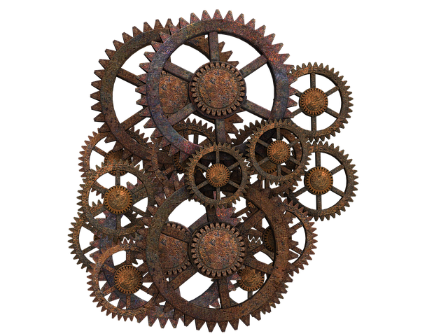
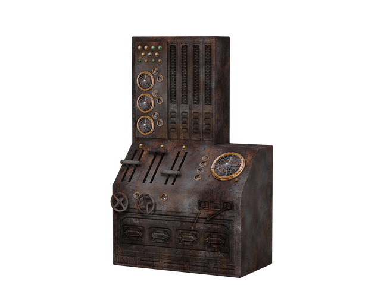
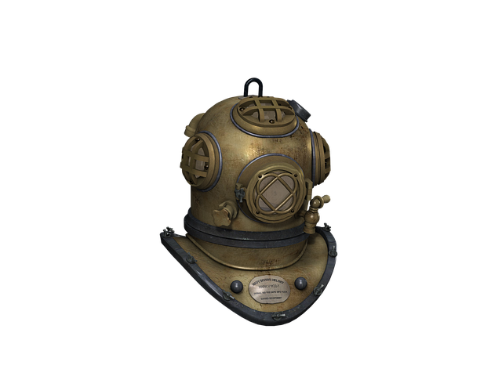

Steampunk style elements

Steampunk jewelry features mostly metal components — soldered, riveted, stacked, bolted or wired

Steampunk contain alternative-history-style presentations of such technology as steam cannons, lighter-than-air airships, analog computers, or such digital mechanical computers as Charles Babbage's Analytical Engine.

A diving helmet is a rigid head enclosure with a breathing gas supply used in underwater diving. They are worn mainly by professional divers engaged in surface-supplied diving, though some models can be used with scuba equipment

An analog clock is a tool for reading the time of day. The shortest hand indicates the hour, a longer hand indicates the minutes, and the longest arm indicates the seconds.